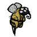

Abigail
Abigail is the Ghost of Wendy's dead twin sister. She can be summoned with Abigail's Flower, Wendy's exclusive starting item. Abigail will defend herself and Wendy against attacking Mobs, and will attack anything that Wendy attacks (even if Wendy cancels the attack). Abigail will despawn into her flower if she loses all of her health. Abigail does more damage during dusk, and significantly more damage during night. She has 600 Health, and when damaged she slowly regenerates at a rate of 1 HealthMeter per second. When her hit points are low, she will have a sad look. She can be healed using healing items, such as Healing Salves, Spider Glands or Honey Poultices. Summoning Abigail costs 50 Sanity. Abigail cannot be frozen by the Ice Staff, and she cannot help the player fight Shadow Creatures or Ghosts. Abigail's kills do not count as the player's kills, as such, they do not increase the player's Naughtiness level.
Ancient Guardian
The Ancient Guardian is a Boss Monster found within the Labyrinth region of the Ruins. It looks and acts similar to a Clockwork Rook, but appears as a living creature covered in fur. The Ancient Guardian drops 8 Meat, a Guardian's Horn and a large Ornate Chest will spawn where it was killed. This chest will contain various loot.
Bee

Bees are neutral Mobs that spawn from Beehives and Bee Boxes. While their aggressive variant - the Killer Bee - is charged with the protection of the nest, the primary function of these normally docile creatures is Honey production. If provoked however, they do join fights to defend the hive. When killed, they drop either 1 Honey or Stinger and increase the player's naughtiness by 1 point.
Butterfly

The Butterfly is a passive Mob commonly found in Grassland biomes. They spawn from Flowers (including Evil Flowers) and will slowly fly around, often landing on other Flowers. At dusk, they always land on a Flower to despawn. Butterflies do not spawn during Winter. When killed, Butterflies drop Butterfly Wings (98% chance) or Butter (2% chance). Butterfly Wings can be eaten to restore Health, or used in a Crock Pot to cook Butter Muffins. As inventory items, they can be used to plant Flowers, which can spawn additional Butterflies or improve the production of Honey in Bee Boxes.
Butterflies are considered innocent creatures and killing one adds 1 point to the player's naughtiness level. Catching Butterflies with a Bug Net will not affect naughtiness. A Butterfly spawns once about every 15 seconds from a flower located between 6 units and 25 units away from the player. It will not spawn if there are 4 Butterflies within 64 units of the player.
Beefalo
Beefalo are neutral Mobs that are indigenous to the Savanna biome unless their world generation setting is changed to "more". When one Beefalo is attacked, all nearby Beefalo will become hostile. Beefalo deal 34 damage with each hit. They drop three Beefalo Wool, four Meat, and a Beefalo Horn 33% of the time when killed, and they drop wool even if they have been shaved already. They are considered innocent creatures and killing one adds 4 points to the player's naughtiness level, which can cause Krampus to appear.
Birds